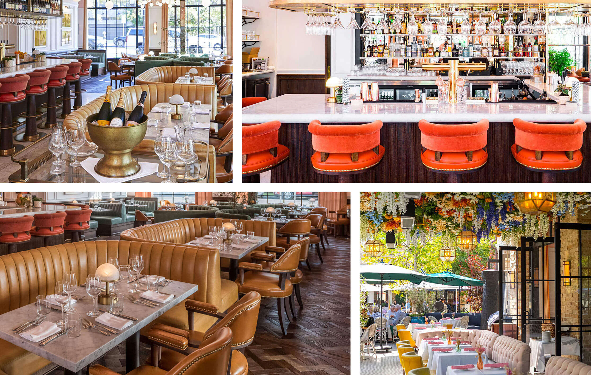
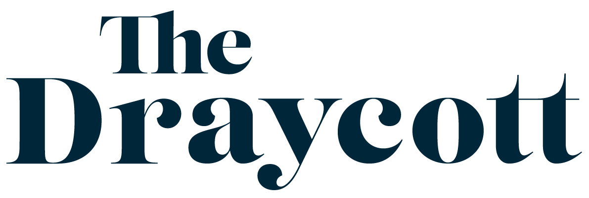
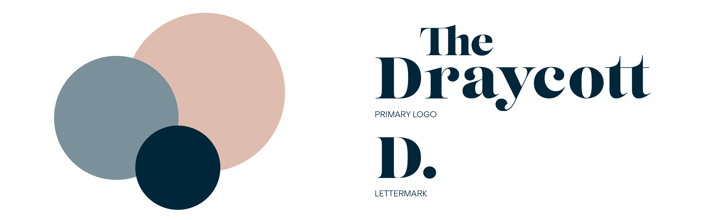

Teaming up with LA Social Karma to design and develop a website that captured the essence of The Draycott, a Pacific Palisades restaurant known for its California cuisine and inviting upscale yet casual atmosphere.
VISUAL IDENTITY
I curated the restaurant's interior design, imagery, and visual identity to reflect the establishment's look and feel.

DESIGN & DEVELOPMENT APPLICATIONS
- Designed web elements for user-friendly functionality and visual hierarchy.
- Developed the website for optimal responsive display on browsers and devices.
- Implemented code and plugins for custom features.
- Maintained image quality alongside color and type consistency.
While the theme and layout closely resemble the original design, the website has since transitioned to a different platform and is maintained by The Draycott's internal team.